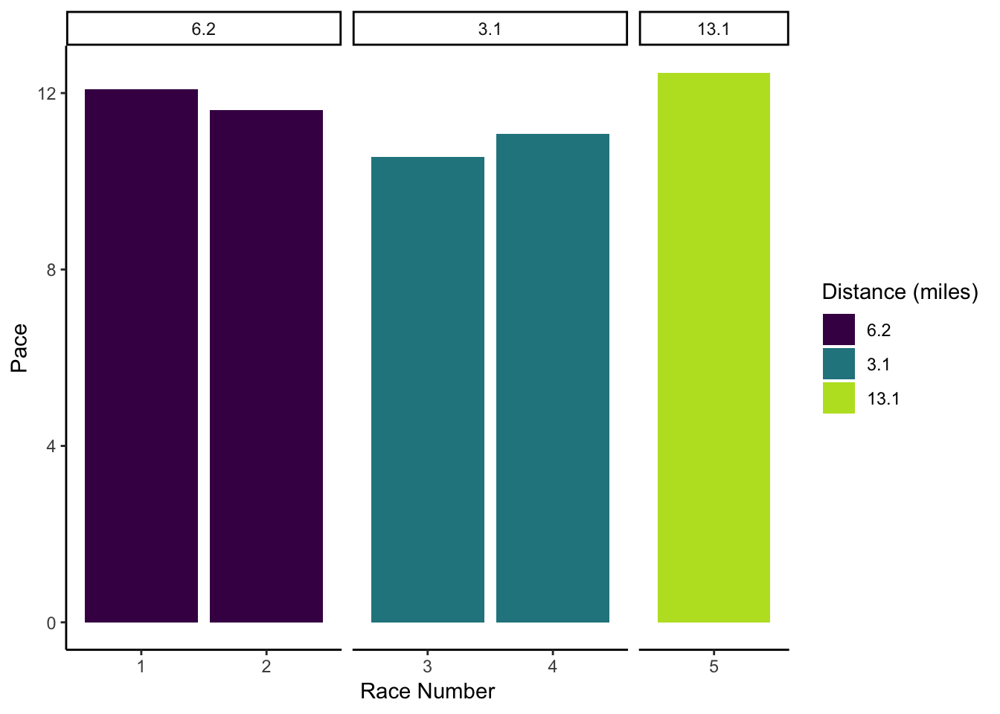
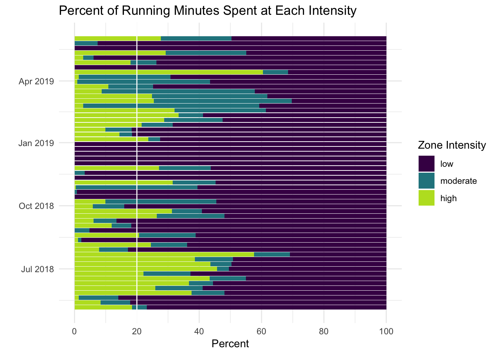
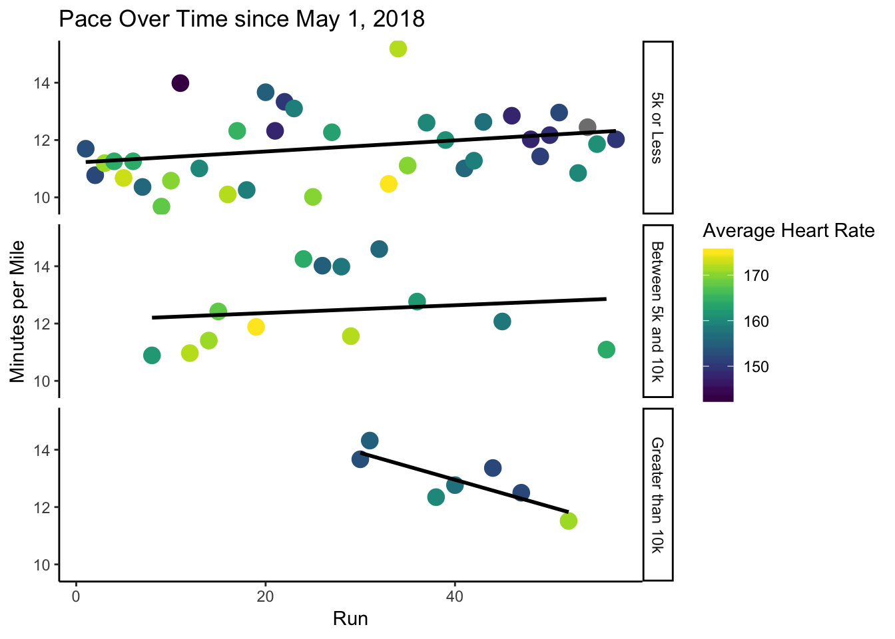

Analyzing My Fitbit Data
Background
TL;DR: I’m new to running as of May 2018 and still very slow, but learning to love the sport!
For most of my life, working out has been a very sporadic activity for me. I dabbled in soccer and tae kwon do (martial arts) as a kid, and danced in college, but never found a solid workout routine in college. I bought a Fitbit in 2016 to help inspire me to be more consistent in training but the device kind of sat on my arm, unnoticed for a few years.
In May of 2018, I took a summer internship in Chicago and began to run to avoid the gym. I registered for Chicago’s 2018 Rock ‘n’ Roll 10k, picking the 10k distance because it was just long enough to challenge me and kick my butt into action, without completely overwhelming me. When I signed up, I had never run longer than 5 minutes without a walk break, so my training was very uninformed and haphazard.
I spent most of my training runs running at my maximum pace, and attempting to run slightly longer than the day before, and left each workout sore, exhausted, and miserable, and felt I wasn’t really making any large improvements in my ability to handle the paces i was trying to handle, or in running longer distances. I never made it past 4.5 miles in my training runs, which freaked me out quite a bit, and made me worried I wouldn’t reach my goal of finishing a 10k. I downloaded Matt Fitzgerald’s book, 80/20 Running, because the tagline “race faster by training slower” seemed like a complete 180 from what my self-prescribed training plan was.
It was after reading that book that I decided to stop comparing my pace to my friend’s paces in my runs, and stopped trying to beat my fastest pace every single time I went for a run. I slowed down most of my runs (with the exception of the occasional, more moanagable speed interval workout here and there), and started to enjoy running a lot more.
The 10k was still brutally hard for me, but by learning to manage my pace a bit better, and reading about the sport from some of the experts, I finished my 10k without stopping to run, and was proud of my time, even though it’s a very unimpressive time for most runners. Since then, I’ve run a few more races (including a half-marathon in April 2019!), have continued working out consistently, and keep setting and reaching new goals for myself.
It’s so cool to think back about how I went from being able to run 5 minutes at a time, and absolutely hating running, to completing a half-marathon a year later, and learning to enjoy the sport. There’s not a whole lot of information out there about slow runners or novices, and how they’ve progressed as runners, so when I found out Fitbit FINALLY made a way for users to download all their data as a .csv file, I was excited to dig into my data not only for my own benefit, but hopefully to also share with other slow, novice runners out there!
About my fitbit data
Below are a few quick visualizations I made from my own personal data collected by my Charge 2 Fitbit, and downloaded as a csv file. For any other Fitbit-ers out there who want to analyze their own data in R or another program, Fitbit just changed how much of your own data you can access in March of 2019 (before, they let you download very basic data, one month at a time, but now you can request all data every collected by your Fitbit, as often as once every 24 hours!). It’s super easy to get your hands on your Fitbit data now that these changes have been made, and a tutorial for downloading your .zip file can be found here. For those interested, the code I used to generate the plots below can be found here.
Workouts
Frequency of Workouts by Type
This plot shows each workout I’ve done since May 2018, categorized by day of week, week of year, and whether the workout was a bike workout (including cycling and outdoor), running workout (including treadmill and outdoor runs), swimming, yoga, or something else (weight lifting, strength training, hiking, etc.). Each tile is colored according to my average heart rate during the workout, where purple shows a low heart rate, yellow shows a high intensity, and grey indicates workouts that are missing heart rate data, such as when my tracker was dead, or I took it off (in the case of my swim workouts).

Running
Official Race Paces and Finish Times
I record official race data manually in an excel file to keep all of my race data from various race sites in one place. I use this instead of my fitbit data, since offical race times and paces can vary quite a bit from what my Fitbit tracker records.
This plot shows my official pace time, organized by the distance of the race. The Race Number shows the order in which I ran these races, starting with my first official race (the Rock ‘n’ Roll 10k) as #1. The table below the plot shows the raw data.

| race_number | race_name | date_time | race_distance | race_finish_ms | race_pace |
|---|---|---|---|---|---|
| 1 | Humana Rock ‘N’ Roll Chicago 10k | 2018-07-22 | 6.2 | 01:15:05 | 12.08 |
| 2 | NYCRuns Govenors Isalnd 10k | 2018-09-29 | 6.2 | 01:12:04 | 11.62 |
| 3 | Dayton Turkey Trot 5k | 2018-11-25 | 3.1 | 00:32:47 | 10.55 |
| 4 | Cupid’s Chase 5K Manhattan | 2019-02-09 | 3.1 | 00:34:23 | 11.07 |
| 5 | Shape Women’s Half Marathon | 2019-04-14 | 13.1 | 02:43:09 | 12.45 |
Running Intensity
I try to follow the guiding principles of the 80/20 Running book, and this plot is meant to show me qualitatively how close I am to reaching the goals set forth by the book. In the book, Matt lays out the guiding principles for defining your own personal low, moderate, and high intenensity heart rate zones. I took my heart rate during each minute I spent working out, assigned it to the appropriate zone, and then calculated what percentage of my running time each week was spent in each heart rate zone (non-running workouts are exluded from this chart). My workout goal is to have 80% of my running at the low/moderate intensity, and 20% of my running at high intensity.

In the last 30 days, 34% of my running minutes have been spent at high intensity zones.
Changes in Running Pace Since May, 2018
This plot is meant to help me visualize how my pace has changed since I started training for my first 10k. I split this plot based on the length of the run, since I know I’ll run longer runs at a slower pace than some of my shorter runs, which tend to be either speed or recovery runs. I also colored the points in this plot according to my heart rate, so that if my pace is staying similar but my heart rate is decreasing, that may also be a sign that I’m improving. The trend lines in each subset show a simple linear regression of how my pace changes with each additional run.
Note: I decided not to scale the x-axis by time, but rather show equal distance between each run.

Based of these linear regression lines, had I attempted a run over 10k when I had first started to seriously run, I’d estimate that my pace would’ve been around 16 minutes and 43 seconds. With each long run, my pace is estimated to decrease by 5 seconds.
Results of Linear Regression
Results of a simple linear regression model between pace and run number for each distance category.
| distance_category | term | estimate | std.error | statistic | p.value |
|---|---|---|---|---|---|
| 5k or Less | run_number | 0.0193597 | 0.0109281 | 1.7715446 | 0.0851776 |
| Between 5k and 10k | run_number | 0.0135830 | 0.0292923 | 0.4637069 | 0.6518986 |
| Greater than 10k | run_number | -0.0939101 | 0.0297820 | -3.1532502 | 0.0252863 |
Hope to use this to work towards my next running goal!